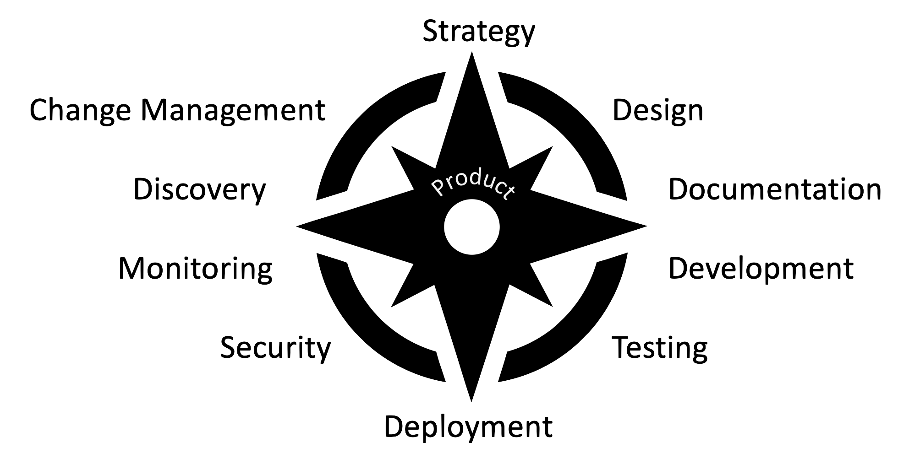
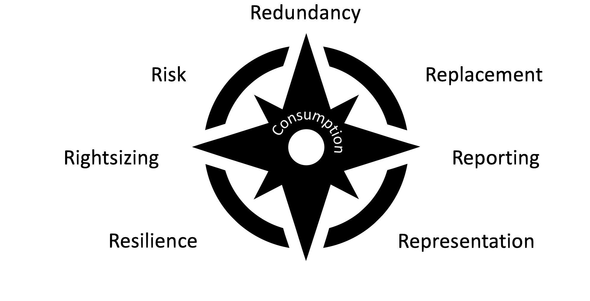
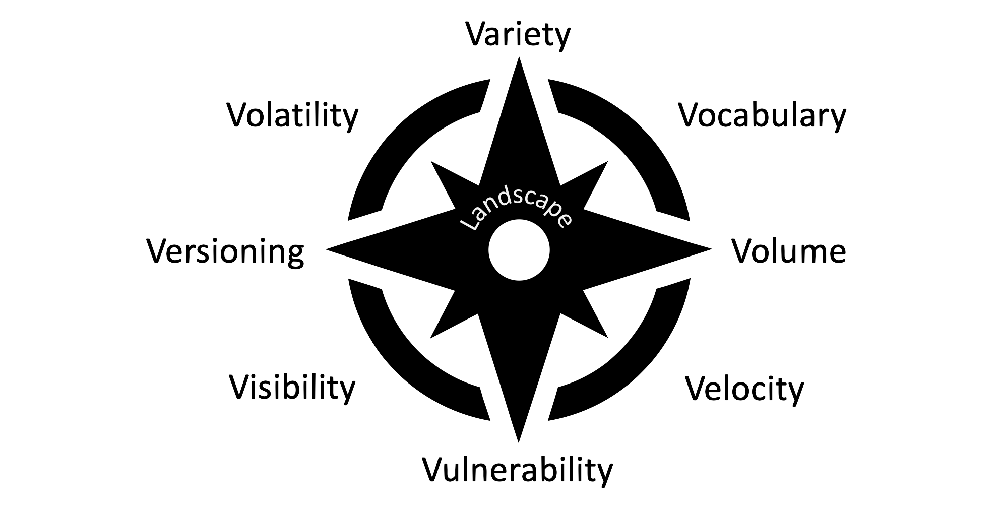

API Landscape Management
(13) Increasing Team Productivity
- Product teams need guidance, autonomy, and support
- Guidance helps understanding and navigating the current landscape
- Autonomy allows choices to be made driven by product and user needs
- Support increases productivity of teams for cross-cutting concerns
- Balancing product value and product portfolio value
- Products focus on achieving
local maxima
for product value
- Landscapes focus on achieving
global maxima
across all products
(14) CAM Compass: Product Pillars

(15) CAM Compass: Consumption Concerns

(16) CAM Compass: Landscape Aspects
